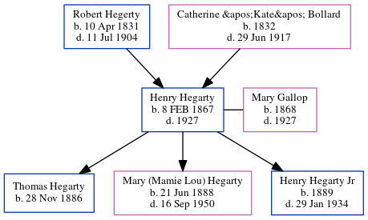

Henry Hegarty 1867 - 1927
[ Home ] | [ Calendar ] | [ Surnames Index ] | [ Census Index ] | [ Family History ]A worked at cyclorama in grant park and the child of Robert Hegerty and Catherine 'Kate' Bollard, Henry Hegarty, the great-great-grandfather of Michele Copp (née Phillips), was born in Dublin, Ireland on Feb 8, 18671,2 and married Mary Gallop (with whom he had 3 children: Thomas Hugh, Mary (Mamie Lou) and Henry Jr.) in Kildare, Ireland in Sep 1887.
During his life, he was living in Atlanta, Georgia, USA in 1890; in Atlanta Ward 3, Fulton, Georgia in 1900; in Atlanta in 19143; and in Atlanta Ward 3, Fulton, Georgia in 19201.
He died in 1927 in Atlanta, De Kalb, Georgia.
Parents
- Robert was born on Apr 10, 1831
- Catherine "Kate" was born in 1832
Children
- Thomas Hugh was born on Nov 28, 1886
- Mary (Mamie Lou) was born on Jun 21, 1888
- Henry Jr. was born in 1889
Citations
- 1920 United States Federal Census Online publication - Provo, UT, USA: MyFamily.com, Inc., 2005. For details on the contents of the film numbers, visit the following NARA web page: NARA. Note: Enumeration Districts 819-839 on roll 323 (Chicago City.Original data - United States of America (Marital Status: Married; Relation to Head: Head)
- OneWorldTree Online publication - Provo, UT, USA: MyFamily.com, Inc.
- U.S. City Directories, 1822-1995 Ancestry.com Operations, Inc.
Family Tree
Generated by ged2site. Last updated on Jun 6, 2024